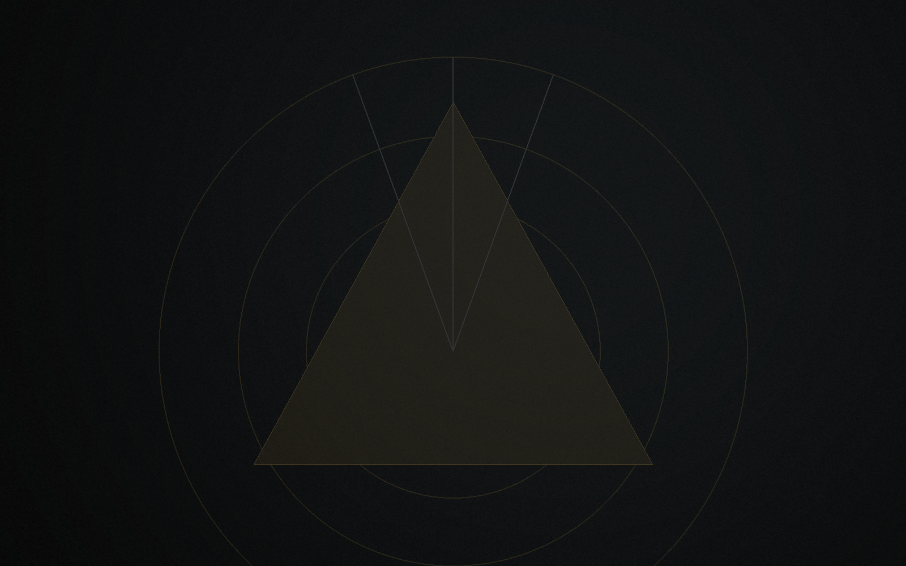

Innovation utile
Structurer des idées et des méthodes pouvant devenir des projets solides.
Impact & Mission
L'impact recherché par Betsaleel est progressif : il repose d'abord sur la qualité de la structuration, la cohérence des projets et la capacité à construire des coopérations utiles.
La mission relie ambition entrepreneuriale, gouvernance responsable et contribution progressive aux territoires, sans publier d'indicateurs non mesurés.
Structurer des idées et des méthodes pouvant devenir des projets solides.
Intégrer les enjeux littoraux, écologiques et territoriaux dans la construction des projets.
Donner une place prioritaire aux enjeux maritimes, côtiers et de gouvernance bleue.
Faire de la cohérence, de l'arbitrage et de la responsabilité des conditions de crédibilité.
Promouvoir le dialogue, la prévention des différends et la coopération entre acteurs.
Construire des contributions économiques, sociales et territoriales de manière progressive.

L'impact se construit par étapes. Cette méthode protège la crédibilité de Betsaleel et évite de promettre au-delà du réel.